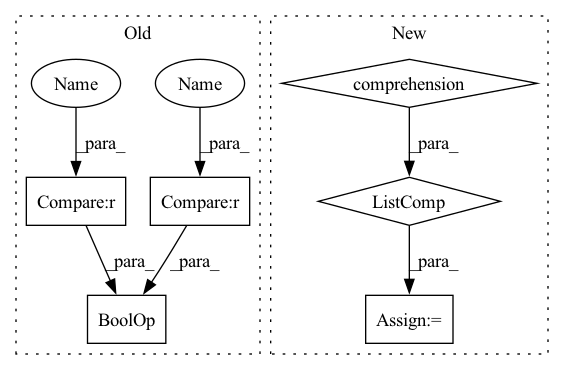

Pattern ID :30027
Before Change
if type(to_source) is Point.PointSource:
to_source = to_source.value
if (in_source == Point.PointSource.Numpy.value and to_source == Point.PointSource.CV.value) or (
in_source == Point.PointSource.CV.value and to_source == Point.PointSource.Numpy.value) :
point = (point[1], point[0])
elif in_source == to_source:
passAfter Change
if point is None or len(point) == 0:
pass
elif type(point[0]) in [tuple, list, np.ndarray]:
point = [Point.point2point(p, in_source=in_source, to_source=to_source) for p in point]
else:
point = Point.point2point(point, in_source=in_source, to_source=to_source)
return point
In pattern: SUPERPATTERN
Frequency: 3
Non-data size: 6
Instances Fragment ID: 89186848
Project Name: pooya-mohammadi/deep_utils
Commit Name: 2ef8e70d9e4b3bc53df5294415180ce10a4ed033
Time: 2021-07-21
Author: practical.ai.programming@gmail.com
File Name: deep_utils/utils/box_utils/boxes.py
M Class Name: Point
N Class Name: Point
M Method Name: point2point(3)
N Method Name: point2point(3)
M Parent Class:
N Parent Class:
M File Name: deep_utils/utils/box_utils/boxes.py
N File Name: deep_utils/utils/box_utils/boxes.py
M Start Line: 12
M End Line: 26
N Start Line: 12
N End Line: 17
Before Change
raise ValueError(""base_lod" must be specified with tree_type == "quad"")
self._init_from_octree(base_lod)
elif tree_type == "geometric":
if max_grid_res is None or min_grid_res is None :
raise ValueError(""max_grid_res" must be specified with tree_type == "geometric"")
self._init_from_geometric(min_grid_res, max_grid_res)
else:After Change
// Feature Structure - setup grid LODs
self.resolutions = resolutions
self.num_lods = len(resolutions)
self.active_lods = [x for x in range(self.num_lods)]
self.max_lod = self.num_lods - 1
self.codebook_size = 2 ** self.codebook_bitwidth
self.codebook = nn.ParameterList([]) Fragment ID: 89186850
Project Name: nvidiagameworks/kaolin-wisp
Commit Name: 5d3173c9d2d4e2c8d8da3e809639515bf73a2225
Time: 2023-01-05
Author: 9556101+orperel@users.noreply.github.com
File Name: wisp/models/grids/hash_grid.py
M Class Name: HashGrid
N Class Name: HashGrid
M Method Name: __init__(8)
N Method Name: __init__(12)
M Parent Class: BLASGrid
N Parent Class: BLASGrid
M File Name: wisp/models/grids/hash_grid.py
N File Name: wisp/models/grids/hash_grid.py
M Start Line: 30
M End Line: 92
N Start Line: 30
N End Line: 87
Before Change
"to indicate end of trial/recording. Using `None`.")
stop_offset_samples = None
if start_offset_samples is not None or stop_offset_samples is not None :
warnings.warn("Usage of offset_sample args in create_fixed_length_windows is deprecated and"
" will be removed in future versions. Please use "
"braindecode.preprocessing.preprocess.Preprocessor("crop", tmin, tmax)"After Change
drop_last_window)
// check if recordings are of different lengths
lengths = np.array([ds.raw.n_times - ds.raw.first_samp for ds in concat_ds.datasets] )
if (np.diff(lengths) != 0).any():
warnings.warn("Recordings have different lengths, they will not be batch-able!")
Fragment ID: 89186855
Project Name: braindecode/braindecode
Commit Name: d47991998e0a0687e73c12d89d61d45f5be26ecc
Time: 2021-06-25
Author: dan.c.wil@gmail.com
File Name: braindecode/preprocessing/windowers.py
M Class Name: AnonimousClass
N Class Name: AnonimousClass
M Method Name: create_fixed_length_windows(14)
N Method Name: create_fixed_length_windows(14)
M Parent Class:
N Parent Class:
M File Name: braindecode/preprocessing/windowers.py
N File Name: braindecode/preprocessing/windowers.py
M Start Line: 122
M End Line: 181
N Start Line: 123
N End Line: 183
Before Change
@staticmethod
def point2point(point, in_source, to_source):
if type(in_source) is Point.PointSource:
in_source = in_source.value
if type(to_source) is Point.PointSource:
to_source = to_source.value
if (in_source == Point.PointSource.Numpy.value and to_source == Point.PointSource.CV.value) or (
in_source == Point.PointSource.CV.value and to_source == Point.PointSource.Numpy.value) :
point = (point[1], point[0])
elif in_source == to_source:
passAfter Change
if point is None or len(point) == 0:
pass
elif type(point[0]) in [tuple, list, np.ndarray]:
point = [Point.point2point(p, in_source=in_source, to_source=to_source) for p in point]
else:
point = Point.point2point(point, in_source=in_source, to_source=to_source)
return point
Fragment ID: 89186856
Project Name: pooya-mohammadi/deep_utils
Commit Name: 2ef8e70d9e4b3bc53df5294415180ce10a4ed033
Time: 2021-07-21
Author: practical.ai.programming@gmail.com
File Name: deep_utils/utils/box_utils/boxes.py
M Class Name: Point
N Class Name: Point
M Method Name: point2point(3)
N Method Name: point2point(3)
M Parent Class:
N Parent Class:
M File Name: deep_utils/utils/box_utils/boxes.py
N File Name: deep_utils/utils/box_utils/boxes.py
M Start Line: 12
M End Line: 26
N Start Line: 12
N End Line: 17